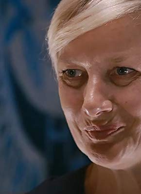

#11593 Komplizen
Alternativ: Accomplices (Englischer Titel)

 IMDB-Wertung: 6.7 / 10
IMDB-Wertung: 6.7 / 10  Tomatometer: 80
Tomatometer: 80  Metascore: 0
Metascore: 0 
Both detectives on a sickening murder case struggle with being alone and childless in their 40s. As they investigate the young man found beaten and strangled to death, platonic friends Karine and Herve unravel a love story between Vincent, and Rebecca a high school girl. The teenage lovers quickly plunged into the kind of amour fou the flics fear to chance for themselves. Rebecca is missing, and unknown to her, the boy was a homosexual Internet hustler. The ordinarily blasé male investigator is appalled to find that on-line dating is a world the sexy Karine knows well. Is Rebecca the killer, another victim or ?
Jahr: 2009
Dauer: 89 Minuten
FSK: 16
Land: Schweiz Studio: Atlantis EntertainmentTonspuren:
Untertitel:
Auflösung: 720p (1280x720) Größe: 1658 MB
Genre: Krimi, Liebe
Regisseur: Frédéric Mermoud
Drehbuch: Pascal Arnold, Frédéric Mermoud
Soundtrack: Grégoire Hetzel
Darsteller:
- Gilbert Melki als Hervé Cagan
- Emmanuelle Devos als Inspecteur Karine Mangin
- Joana Preiss als Esther, la mère de Rebecca
- Jérémy Kapone als Thomas
 Marc Rioufol als Jean-Paul Tardieu
Marc Rioufol als Jean-Paul Tardieu- Serge Larivière als L'homme mûr de l'hôtel
-  Anne Loiret als L'avocate
- Clara Ponsot als Lola
- Laetitia Dosch als La soeur de Vincent
- Nina Rodriguez als Nina
- Cyril Descours als Vincent Bouvier
- Nina Meurisse als Rebecca Legendre
- Jeremy Azencott als Nicolas Bianchini
- Yeelem Jappain als Belen
- Eric Laugérias als Yves Cagan
- Fred Epaud als L'homme d'affaires de l'hôtel
- Valérie Lang als Laurence
- Jean-Pierre Sanchez als Karim
- Olivier Gueritée als Mikaël
- Pierre Mifsud als Le médecin légiste
- Brigitte Chambon als La mère de Vincent
- Christophe Carry als Le photographe IJ
- Virginia Anderson als La pharmacienne
- Cédric Monnet als Le client du hammam
- Cécile Marroco als Serveuse
Datei: X:\NEU\Komplizen (2009, FSK16, 1280x720).mkv seit 01.08.2019
 Es gibt insgesamt 187 Filme in der Gruppe 'NEU'
Es gibt insgesamt 187 Filme in der Gruppe 'NEU'